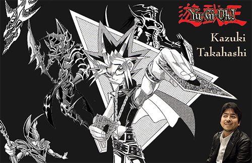

Kazuki Takahashi Memorial
Fall 2023
Adobe Photoshop
Artwork present in compositions was made by Kazuki Takahashi and etc, I had no hand in making them.
Challenge: Create a poster that memorializes a deceased artist or designer to honor their work.
Process: This was my introduction to Photoshop’s photo editing capabilities. I decided to focus on composition and used basic tools to change the properties of the images I was using, such as deleting the backgrounds. One issue I had was finding a way to integrate elements of the card game Takahashi helped conceived which I decided to resolve by featuring the creatures form the card game coming out of the main character of the manga he created, since the image I used for the main character ended up serving as the base for my composition.
